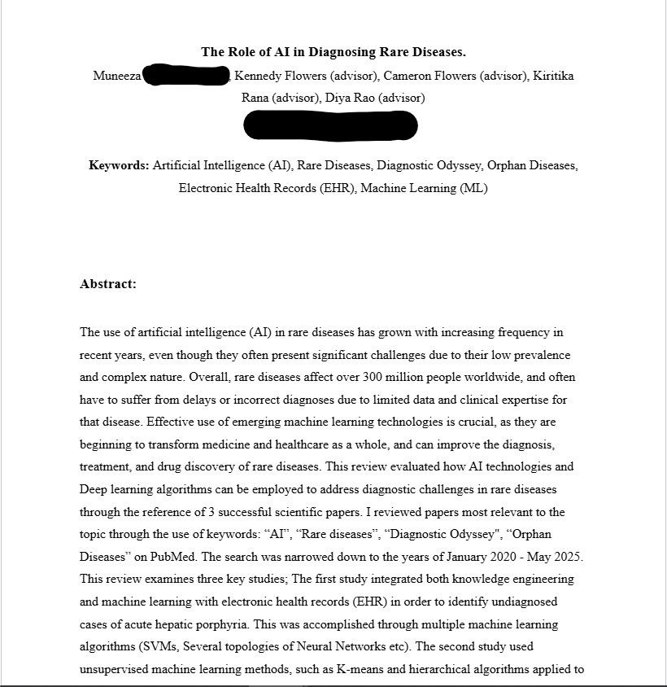

Portfolio
Projects & Research
- AI & Rare Diseases for Teens in Health: I wrote a literature review on how AI is used to identify rare diseases. Learning into depth about SVMs, electronic health record (EHR) analysis, and unsupervised learning like K-means and hierarchical clustering specifically through the ApreciseKUre platform for Alkaptonuria, which is a rare inherited disease which can significantly lower the quality of life of a person. Learning about these were incredibly insightful
- Paper Summaries: Read and reviewed 3 scientific papers on machine learning in medicine, focusing on real-world AI applications in diagnostics and patient stratification.

Experience
- WWF Digital Eco-Internship: Learned about environmental sustainability and digital activism.
- Teens in Technology Volunteer: Helped elder adults learn basic technology skills through student-led presentations.
- Peer Tutoring (Math & Physics): Tutored classmates and underclassmen at school in Maths and Physics
More About Me
- Piano: Playing for over 3 years (and still going strong :D )
- Debate Club: Sharpening communication and argument-building skills
- Math Competitions: Participated in the N-CATS math competition